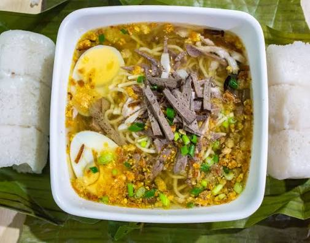

|
|
La Paz Batchoy

A famous noodle soup from Iloilo. A framed history from Inggo’s Original La Paz Batchoy
, one of the city’s most enduring names, traces the beginnings to 1921, when Domingo “Inggo” Lozada from Negros Occidental, then 21, took inspiration from bas-oy, described as meat balls dipped in homemade sauce, and began shaping what would become a hot noodle soup sold on the sidewalk of Luna Street in La Paz. From there, the story moves through wartime persistence and market evolution. Lozada kept the batchoy going during World War II, later moving to the La Paz Market, refining quality and taste until “La Paz batchoy” stopped being just a dish and became a phrase people said across the Philippines as if it were a place you could taste. The same account notes a 1984 recognition from the Iloilo Chamber of Commerce and Industry and allied groups, honoring Lozada as an “Outstanding Pioneer in Batchoy-Food Products,” a civic nod that feels uniquely Ilonggo: food here is not only eaten, it is archived.
INGRIDIENTS
1. 3 pounds pork bones
2. pounds beef bones, with marrow
water
3. ½ pound pork shoulder
4. ½ pound pork intestines, cleaned
5. ½ pound pork liver
6. 1 red onion, peeled and minced
7. 2 cloves garlic, peeled and minced
8. 1 tablespoon sauteed shrimp paste
9. 2 tablespoons sugar
10. ¼ teaspoon MSG
rock salt and pepper
11. 2 package (16 ounces each) fresh miki noodles
FOR THE TOPPINGS
1. pork cracklings (chicharon), crushed
fried garlic bits
2. green onions
3. 8 whole raw eggs, optional
INSTRUCTIONS
1. In a deep pot, bring enough water to cover bones to a boil. Add bones and boil, skimming scum that floats on top, for about 10 minutes. Drain bones and discard liquid.
2. Under cold running water, rinse bones to rid of any scum. Rinse pot. Return the bones to the pot and enough cold water (about 10 to 12 cups) to cover. Bring to a boil, skimming scum that floats on top. Lower heat, cover, and simmer for about 2 hours.
3. Using a colander, strain broth. Scrape off any attached meat from the bones and set aside. Using a small spoon, scoop out marrow from beef bones and set aside. Discard the bones.
4. Return broth to the pot and bring to a boil. Add pork shoulder and pork intestines. Cook for about 30 to 40 minutes or until tender. With a slotted spoon, remove from pot and allow to slightly cool to touch. Slice into strips and set aside.
5. Add liver to pot and cook for about 7 to 10 minutes. With a slotted spoon, remove from pot and allow to slight cool to touch. Slice into strips and set aside.
6. Add onions and garlic to the pot of hot broth. Cook for about 2 to 3 minutes or until onions and garlic are softened.
7. Add shrimp paste and stir until dispersed. Add sugar and MSG. Season with rock salt and pepper to taste.
8. In a saucepot, bring about 3 quarts of water to a boil. Using a strainer basket, submerge noodles for about 30 to 40 seconds. Drain well and divide into serving bowls.
9. Ladle hot broth over the noodles. Top with sliced pork, intestines, liver, and any scrap meat from bones. Divide bone marrow into each bowl, if desired.
10. Garnish with chicharon, fried garlic bits, and green onions.
11. Crack a raw egg into each bowl, if desired. Serve hot. |